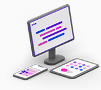
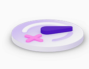

.NET is the free, open-source, cross-platform framework for building modern apps and powerful
cloud services.


Free and open source
.NET is a free and open-source project,
developed and maintained on GitHub,
the home for millions of developers who want
to build great things together.
Fast and Cross Platform
.NET performs faster than any other
popular framework according to
TechEmpower. You can write, run, and
build on multiple platforms, including
Windows, Linux, and macOS.
Free and open source
.NET is a free and open-source project,
developed and maintained on GitHub,
the home for millions of developers who want
to build great things together.
Everything you need to start your .Net learning journey
.NET offers a library of learning resources. Access videos,
tutorials, code samples, and content from Microsoft Learn to
help you build better.